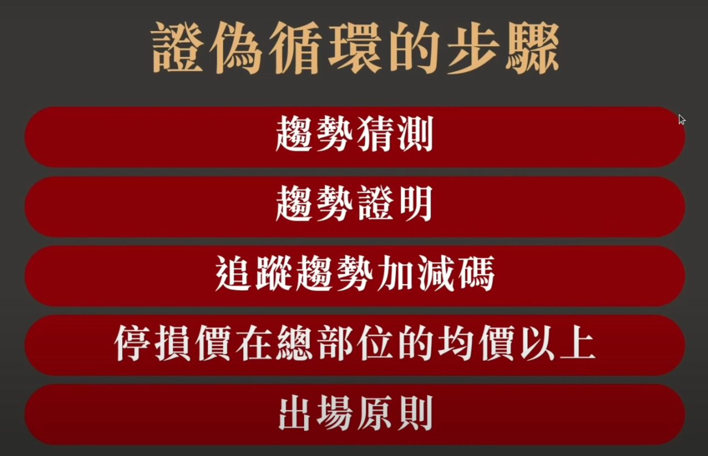
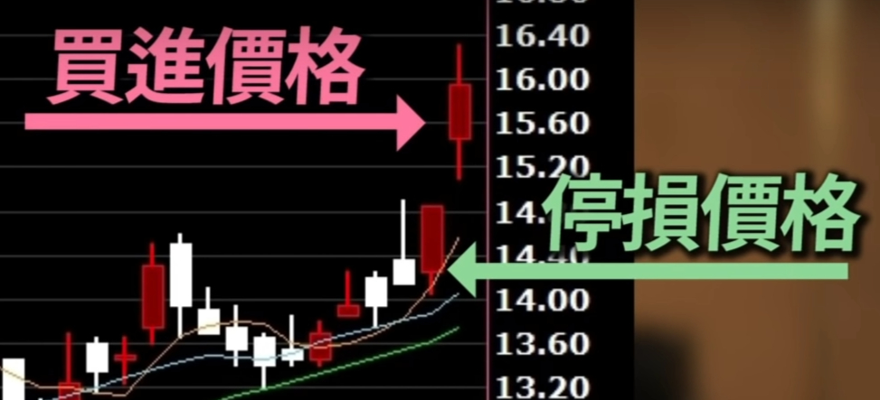
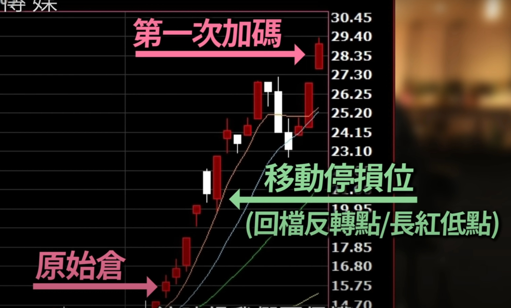
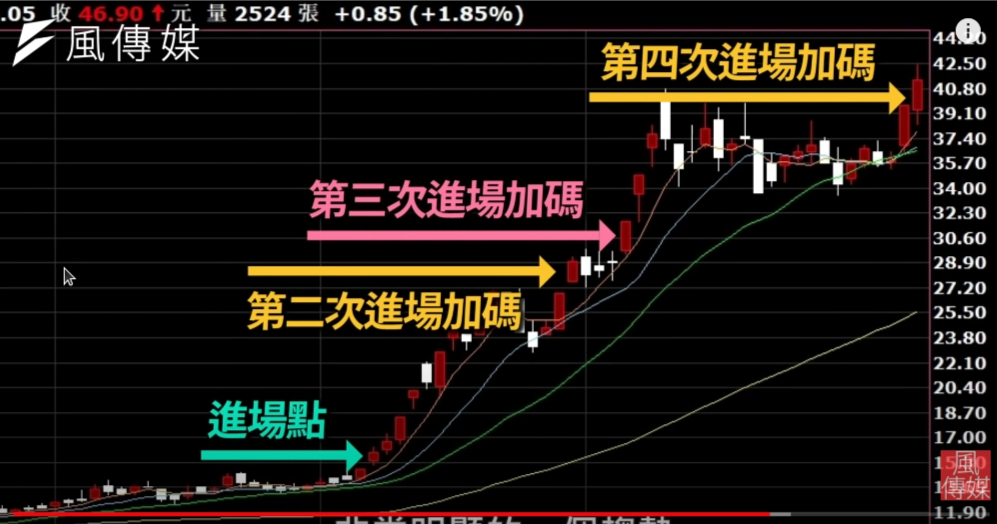
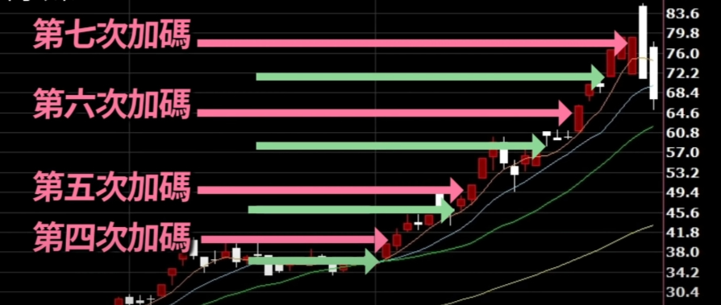
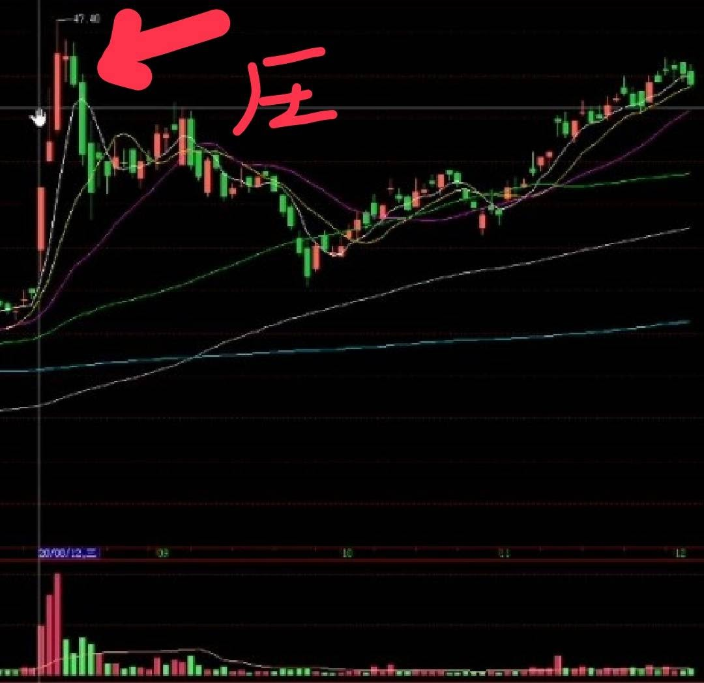

短波段必勝交易法
5步驟抓800%飆股起漲點！波段操作實戰心法！進場、加碼不敗秘技 ft. 阿魯米
- 停損越短越好
- 在乎行情, 而不是在乎跳動損益, 金錢就伴隨而來 這樣會讓自己做最正確判斷
- 停損要無感 像呼吸一樣自然
- 每天都有新的波段
- 選股
- 大盤崩跌後 個股跟大盤比誰先回到大盤的起跌點 可能是未來主流 領導股
- 跟自己比需要創新高 新高是一個週期概念 週期越長越準確 ex 突破兩年新高
- 成交量確認是一種印記 表示可能是飆股 錢是最聰明的東西 股票市場就是要有前它才會波動
- 能畫出趨勢線的時候趨勢可能快結束了
做波段精隨 在不確定性中 尋找確定性 就是站在機率角度上 ex: 站上均線偏多 加入交易SOP
證偽循環概念 ： 對未來一無所知
- 交易就是一個 Try Error 的過程
- 當挑到選好某檔波段股 尋找一個啟動點 啟動點就是創新高地方 創新高地方第一次就要Try Error 嘗試建立一個部位 建立之後架設停損 未來預期可能往一邊傾斜 但我們不知道它怎麼走都是? 號 但是我們控制的風險這一側 獲利那邊我們不知道 就讓市場來決定 如果市場決定了 讓我們停損點到了 那我們就是錯誤了 (由市場證明我是錯的) 如果趨勢是對的就不會點到停損
停損就在前一天啟動低檔區
一旦進入加碼代表原始倉位是對的 就不能賠回去 平損設在均價上方
- 加碼資金不能超過原始資金太多不然成本會高於原本獲利的
移動停損技巧 加碼前的大紅K低點 或者缺口不要讓他回補
- 永遠都買再最高點 永遠買再最有動能的地方 反而最安全 , 盤整偏高地方可能是很危險的 ～ 波動啟動的時候不用害怕
- 要看位階
- 細產業分類 找到今天強弱哪些產業做當沖 , 短波段強勢股也可以適用 by 阿魯米





思考阿魯米的Try Error投資法
在下班經濟學的影片中，看到阿魯米老師介紹適合散戶的短線波段投資法。以三至五天為一個操作週期，選定一個標的來買入。當看準一個上升的大波段形成時，要大膽的分批買進，並且設立停損點，直到波段結束形成虧損後再出場，此時經過幾次加碼後，前面幾次都賺到，只有最後一次賠錢。以下為月光自行想像的例子，與阿魯米老師解說的並不相同:
例如在A股票每股100元時買入，停損點設在97元，當上漲到105元時再買入。漲到110元再買入，一直往上買下去，買到150元時開始下跌，而當時的停損點設在147元，跌破147元就賣出，此時前面的買入都是有賺到錢的，只有最後一筆虧錢。
這種投資法的好處是避免一次性買入，而造成動彈不得的結果。萬一虧錢就真的套牢了，那這樣資金也無法作其他運用，除非認賠出場，那也是傷了元氣。向上買入的好處是，只要專心顧好停損就好，不用去擔心會漲到多少。因為會漲到哪裡不是散戶可以決定的，而要在何時出場卻是自己可以決定的，這樣反而會比較心安。
月光認為這種順勢操作的手法有點像是棒球比賽中想要搶先上壘的第一棒打者，積極的揮棒以爭取上壘機會。沒有揮棒只靠四壞球保送的機會只能可遇而不可求。積極進場就是將自己置入險地之中，但並非有勇無謀的行為。
透過分批買進及設立停損點的方式，試圖將風險降至最低。而困難點還是在於如何選擇適合的標的?如何看出某檔個股將有一大波漲幅?按照散戶的速度都是訊息末端，往往等到股價上漲了才能來決定是否入場。這時從創新高的個股中來挑選會是一個好的開始。股價要翻漲一倍之前，會先漲百分之50，在那之前會漲百分之25。因此從這些上漲的個股中，再挑選能夠抗跌並優先於大盤開始上漲的個股以縮小範圍，最後由自己大膽挑選出會持續上漲的個股然後買入，就有可能享受到跟著大盤上漲的快感。
這樣看來好像是在追高，追高不是勝率不高嗎?那何必明知卻要追買?等著被主力收割?但既然鎖定的標的已經經過挑選，就要讓自己背負一些風險。月光認為試單很重要，沒有試一切都是紙上談兵，這是短線交易很重要的一點。要有容錯率，容許自己失敗，甚至失敗到不會影響到心情，仍然照自己設定的方向走，這樣才是走短線應有的操作心法。
「獨門秘密」移動加碼「3」定律！
https://www.youtube.com/watch?v=sRCjzD7rU8M
- 加碼後就不能賠錢 停損設在成本價之上-
- 波段不能加碼太快 不能增加風險很容易被掃出去 ex:賺20% 再考加碼
- 3~5支 ex: 5支都賺錢 找賺最多的加碼 趨勢最明顯 加碼也不容易賠錢
- 加碼多少 ？因個股＆資金而異
RSI鈍化搭配這條線超無敵？完美獲利怒賺一波！
- 老王表示鈍化的定義是，RSI連續3天站上80以上稱為「高檔鈍化」; 反之若連續3天低於20以下，則稱為「低檔鈍化」
- 老王提到鈍化的邏輯，基本上高檔鈍化就是繼續漲，低檔鈍化就是繼續跌，因此千萬不要在看到低檔鈍化時，輕易搶反彈。
- 如何判斷鈍化是否已經結束，老王強調可以透過「一條線的視覺化操作」，也就是觀察五日均線，如果沒有漲過五日均線，那麼該檔股票的低檔鈍化就會繼續，你就可以沿著五日均線去做空，同時也有助於設定停損點；反之高檔鈍化也是一樣的道理，甚至可以幫你買在別人不敢買的地方，但是老王提醒，如果高檔鈍化持續，不過已跌破五日均線，此時就必須先賣出。
- 前低指前一個波浪的低點
波段最好用—量能激增使用要訣 達文西
https://www.youtube.com/watch?v=WW2qtqlaWAs
- 剛突破盤區 or 前高
- 買在均線都往上(短均線都長均線之上)
- 突破前量縮
- 做波段看日線
- 均線糾結不要買
- 量能激增底部剛彈起來出量 上面壓力還是很大 也不要買
小白 「週波段」賺錢 4大秘密！
https://www.youtube.com/watch?v=5lj0y4oQ8qQ
- 做日線級別大方向看周線 (長線保護短線) 周線前1~2週有量代表處於發動中
- 日線突破陷於區間 還在箱子裡面
- 第一根突破箱子上緣帶量紅K棒
- 突破前兩天要量縮 ～ 能量縮代表沒有賣壓的徵兆
- 突破又帶量代表都是區間移動 持股可以 buy & hold
- 短期獲利才可以留倉
小白賺錢的信念
- 信念
- 停損架構架上去方向不要改變
- 沒有技術分析判斷可以逢低承接 只有信念 認為是多方 (賺錢後回檔去低接)
- 低階一個原則 一旦加碼後就不能再賠回去，不然加碼就沒意義，算一下加碼後成本均價，不能再賠回去停損設成本均價之上5. 多頭走勢通常會在量很大時候，短線乖離很大，大家盲目進場之後就結束! (主力出貨) ，當量很大短線乖離很大時候，這時候逆思考慢慢減碼，才會賣到好價錢，噴出大概要快結束，要有警覺性
- 連拉很多天紅K漲幾十%，出大量紅K 可能就是出貨，而不是另一波攻勢，之後可能拉回整理一段時間才可能再重啟創新高
- 位階問題
左邊暴大量很多人成本套這高點，所以最右邊要突破這賣壓很難～除非出量突破 or 拉回在盤整後在突破

关于右侧交易其实是看左侧，左侧交易其实是看右侧。简单地说是要出现一个相对的参考点，以参考点为中心，在它的右侧来交易，简称右侧交易。右侧交易是策略型交易，有明确的停损价格，交易方式为追高杀低。
相对左侧交易是猜测高低点，因为参考点并未出现，所以属于均值回归的逆势交易。交易方式为低买高卖，或是高抛低吸。（这两个是上海帮的神雕侠侣，别问我神雕是谁，是人还是器官）。最近很多事，找时间来发个专文。 by 阿魯米
発動點的判斷可以參考均線走勢，價量關係，指標及vcp股價收縮型態。by David Dai價格波動性垂直收斂，時間軸左右收斂，觀察網球彈跳行為，最後就是你說的噴出。by David Dai
PTT 文章
技術分析是用客觀角度去面對自己股票，不論技術分析或基本分析，太陷入主觀角度都會死的很慘。技術分析肯定會被主力利用，但排除夭骨不說，我的夭骨定義是冷門、資本小、有主力明顯在網路放送拉抬。就我經驗在找出趨勢向上股票後往往會遇到兩種狀況
- 拉回盤整後無法再攻前高：題材是假的，沒人追價了，因為前波進場，估值過高，故不是陷入死魚就是往下跌破了。
- 拉回盤整後均價趨於一致續攻前高：題材是真的而且後續反應在營收等基本面，前波獲利了結賣壓終止，且大部分人惜售，那就是往上噴噴。所以技術分析方便找出有題材前景股票，但能不能續漲，還是要看自己對公司未來前景的判斷正不正確，對產業知識跟景氣氛圍敏感度要很強。
所以技術分析方便找出有題材前景股票，但能不能續漲，還是要看自己對公司未來前景的判斷正不正確，對產業知識跟景氣氛圍敏感度要很強。
問題量 : 暴大量去看之前量對比一下 by 蔡森
先有型態( VCP/破底翻) 出來 再去設停損這種被洗掉機率比較低~ 沒型態失敗率很高常常停損 by 蔡森
出現暴大量可能都是一個轉折點 by 蕭明道
突破 ： (角度、時間) by 蕭明道
- VCP型態、破底翻 ＋ 基本面 ＋ 奇正(前景、業績面、籌碼面、週線、日線)
VCP買進法: 折衷之道為：在VCP低點先買一半，樞紐點突破再買進一半。如果不是VCP則不要追高，永遠要買低。 by 奇正試單策略為什麼不是跌破加碼再買。因為跌破撿便宜，這就沒有了停損機制，將自己置於最大化的風險之中。所以這是絕不可取的。正確的方法是，VCP量縮低點買，跌破賣；樞紐點大量突破再買，若立刻碰到大量長黑等奇奇怪怪走勢，則可無損賣出，因為你有一筆低成本的單。by 奇正
劉義宏
假突破判斷
- 過前高是不是真突破是很難判斷的，這種走勢往往是有主力在操縱，一種是看大環境，像現在大盤走勢高檔震蕩，上方賣壓很重，現在如果有股票突破前高，也很難漲太多。另外一種方式是看量，如果破前高後出現突然性巨量，也要小心，很有可能是主力在誘多吸引散戶接盤出貨
主力出貨初步詳解
- 對於普通散戶來講，出貨是非常容易的一件事情，對股價幾乎產生不了實質性的影響，除非是由於某個重大利空而導致散戶大面積拋售。而對於主力來說則完全不同，由於他們手中握著大量的籌碼，對股價的運行趨勢勢必會產生較大的影響。但並不是說主力出貨時股價一定要下跌，或者說運行趨勢就會向下，因為很多時候，主力是在拉升的過程中完成出貨的。
- 主力出貨會導致股價下跌，其實這是一種誤解。這種觀點從長遠來看是正確的，因為主力一旦開始出貨就意味著主力的籌碼開始減少，而散戶的籌碼則開始增多。 但任何事物的發展都有一個過程，主力出貨絕不是幾天甚至幾周能完成的，主力在開始出貨後的相當長一段時間內仍然能夠很好地掌控個股的走勢，而且因持倉巨大，其出貨空間不可能完全集中在最高位進行。 在股價上漲的途中，如果大勢較好，主力就很有可能提前派現一部分籌碼，不明了的投資者一旦發現主力的這種派現行為就匆忙拋出手中籌碼，則很有可能錯過後面的大好行情。 所以，對於普通投資者而言，當發現個股已經漲幅不小時，完全可以不必恐高，因為股價的後期漲幅仍有可能在主力使用手中餘籌的控制下超出我們的預料，等真正發現主力大量集中出貨時再出手也不晚。
主力出貨特征
高位放量帶影線
- 高位放量帶影線意味這高位滯漲，行情即將反轉，投資者應謹慎持股，逐步減倉為宜。這裏的帶影線可以是十字星、上影線、下影線等
頂部量價特徵
- 股價已經有一定漲幅情況下，某日股價急速拉升，成交量急劇放大，收出巨量大陽線或大陰線，這往往是莊家出貨的標誌，投資者應及時跟隨出局
高位放量打開漲停
- 股價短期漲幅較大，某日出現漲停，但盤中漲停板有被打開，量能急劇放大，投資者應逐步減倉。
高位放量跳空長陽線
- 前期股價漲幅已大，獲利盤積累已經很多。某日放量收出大陽線，說明市場分歧加大，投資者可逐步減倉。如次日股價反轉，可清倉出局
- 高位放量大陰線
- 在股價前期漲幅較大的情況下，某日放量收出大
蘭弦
- 沒量追高才安全，趨勢末端常常暴大量
- 創新高角度太大暴量帶跳空很危險
- 創新高不帶超級大量才不會被倒貨又有基本面才是真正機會
- 選股(濾網)條件要使用不同來源 : 量 / 價(指標不同參數) / 基本面
- 資金流量MFI + 威廉55
馬克堅持要等突破才能買，但我有些疑問。 實在是有點困惑，請問正解？VCP買進法第二版
一般的情況下(包括箱形突破、價格波動綠突破、包寧傑順勢系統等)你盡量不要追高，但VCP的樞紐點突破可追進，一則VCP已經充分整理，二則因為波動不大，其低點與突破點相差不大所以可做為重要買進訊號。注意，樞紐點突破點與當天收盤價不同，你如果在收盤買進可能就已經離樞鈕點很遠了。雖然「超級績效」認為「務必等待樞紐點突破」，但實際情況是你很難剛好買到「突破點」，比如漲3%就突破，但收盤可能漲了10%，一則離開突破點太遠，二則台股經常會漲停鎖死買不到，所以不能用收盤價買，雖說可以設定「到價買單」但也有經常會有「假突破」或者是量能不足。另外，也經常發生主力在發動攻擊時，立刻給你漲停一價到底。總之，剛好買在「樞紐突破點」似乎並非那麼容易。折衷之道為：在VCP低點先買一半，樞紐點突破再買進一半。如果不是VCP則不要追高，永遠要買低。務必等待樞紐點突破以下摘自「超級績效－－金融怪傑交易之道」/ Mark Minervini在樞紐點突破之前，有些投資人會想要提早進場，主要是為了希望能以更低價格買進。 但如此貿然認定相關股票一定會向上突破，這種假設其實是相當危險的行為。如果樞紐點的 價格波動很小，提早進場其實並沒有太大意義，因為價格差異不大，提早進場只是徒增風險。 所以，務必等待實際突破之後再行動。樞紐點雖然只是整體排列的一部份，卻是很重要的部 分，因為這是決定投資人是否要扣下扳機的關鍵。某些底部整理可能沒有緊密的樞紐點。舉例來說，平坦狀的底部排列，除了整體排列 的高點之外，並沒有真正的樞紐點;這種情況下，只要底部修正幅度不超過百分之十~ 十五，投資人就可以在價格穿越整個底部的最高價時進場。某些價格型態的樞紐點，價位可 能低於整體排列的最高價，譬如:「杯狀完成騙局」(cup completion cheat ，簡稱3C)或「杯 狀帶柄」。這種按部就班的步驟，可以讓投資人更精準判斷「低風險/高報酬」的交易機會。各位 如果採納此處建議的方法，進場點可以更精準。這並不是說投資人因此絕對不會失敗，也不 是說股價絕對不會拉回而引發停損。投資人的分析如果有問題，或想在空頭市場買進股票，交 易勝算自然會減少，價格型態也有可能突然失敗。總之，樞紐點的成功機會，顯然跟底部排 列的健全程度有關。
阿魯米
- 突破買在新高點比較沒賣壓 (沒人套牢)
- 為什麼有些股票有後面突然又噴出去 ex. 合一有第五波
- 當市場上貨越來越少～ 市場有流通10萬張 後來可能只剩2萬張～ 買個3000張就噴出去了期貨是做一口多一口～ 股票是買一張少一張
- 外資＆投信
- 外资投信的确可以作为买卖依据参考，牛顿说站在巨人肩膀使我看的更远。不过，现在很多假外资。而投信一般都有对特定个股有研究，而且非冷门股创新高新低都有投信的影子，其实他们也用技术分析。所以可以把它当成甄选名单来过滤。至于法人买价格却跌或是法人卖却涨。。。这一点要记得，单一个股真正的主导人不一定是法人，主力和公司派影响力更大，毕竟货在他们手上，只要有钱就无敌了。而且法人是否跟公司派或主力有暗盘，法人的部位就像研究分点的白痴一样，很多时候只是做给你看，其实我们并不知道背后的故事，所以参考就好，别想太多主力，其实没有定义，有钱不一定就是主力。主力没有公司派的支持，其实很容易受伤。当然把股票买上去公司派一定很乐意，但是退场是技术。我记得写过一篇主力相关的文章。主力并没有想象中的厉害。对于小型股流动性差，一天成交几百万几千万，这个群里很多人都有能力连续涨停好几根，问题是：然后呢？卖给谁？画线容易，把线画的好，让大家追捧出货却很难，首先面对公司派，其次还有很多法人和其他主力。高需要认同，不然就是自己爽而已。对于一些白痴的主力，手法拙劣，有时候市场不是不杀他，而是没货不好杀，要对干需要准备，没有优势所以最好观望。不必觉得主力很厉害，其实不玩流动性小的就好。对于中大型股票，那就不是一两个主力来决定了。今天我们上海帮收盘喇滴赛，高抛低吸说：他长期看不起对手。。。。这句话其实不是不尊重对手，而是对手其实没你想象中的厉害，主力？谁是主力？斗得过就干他，斗不过就跟着他，不然就跑，不跟他玩。不需美化他，主力在交易中，其实是个根本不必在乎的名词。仅此而已！ 散户进场持有之时，就是波段结束的时候。从人均张数，大户持股，散户持股可以看到这个不争的事实。悲催的是，股票在涨的时候，散户或有进场，但是却都不能长期持有，小打小闹。当行情下跌时，散户踊跃跑步进场，却接到大户丢出的筹码，没赚钱就不肯出场，然后套房越买越多，越住越高。而这唯一解决的方法就是停损，但这却是最违反人性的。以国巨为例的套牢三部曲， 第一部曲景阳冈打虎，明知山有虎，偏向虎山行：小赔但是不认为自己是最后一只老鼠的自信。在800元买，赔了50块不认赔，再做均价继续买。 第二部曲神农尝百草，遍寻解套药方：寻找理由试图给自己交易合理化。赔了100块，有点难过，但是隔壁的卖菜的买在1200元，他都不怕了，我怕啥？等他赚钱，老子就赚50%以上。开始听有利于自己交易的消息和新闻，并且深信不疑。 第三部曲：孙悟空到此一游，压于五指山下，等待唐僧。这是绝望的开始，到了500元，都赔了300元，那就放着吧，都从高点跌下来剩下4成的价格，难不成这么大的公司会倒？跌破300后绝望，一张亏损超过50万，拥套房数间，上班努力工作，不问俗世。。。。唯一的快乐就是到隔壁卖菜的问他股票卖了没有。
股票交易我喜欢（大盘，股指），由下而上做细节（个股分析），横向做检验寻找更好的机会（相关产业或族群）。
大盘尽量不逆势，覆巢之下无完卵，很简单的例子，不妨检视近期强势股，一个月涨超过20%的股票近400只，这些股票在去年十月份之前的走势就已经埋下强势股的伏笔，但是在十月也几乎一起崩跌。大盘崩跌前的股票，基本上就是飙股首选，当然还有许多检视过滤的方法，只要注意大盘崩跌前和崩跌后的行为，很容易就找到好股票。所以大盘大跌时其实才是最需要研究的时光。
所谓的趋势是由主图更高的级别来决定方向，如果以日线为主体的波段交易者，三五天的行情，可能也就是周线上面的一个小盘区，而在分钟图上面却是一个大波段。所以在日线上面形成的V型反转，可能就是周线上面的区间或支撑压力所造成的。在当冲的分钟图上的V型反转，可能也只不过是受限于日线的压力支撑或是边界。所以在交易的周期主图上所形成的形态或是结构，往往都受限于向上一周期的框架之中。而同样的，在向下一周期寻找的点位，也是受限于主图的框架。跨周期其实是彼此层层的影响，交互作用，而形成了整个走势结构。
权值股通常都是震荡方式走出趋势，中小型就很直接。个股要狂飙前一般都有征兆，但是不是有征兆的都会狂飙。要狂飙必须现涨给市场看。至于什么征兆可以参考我说书内容。
大戶在推砸錢幾千萬不會只推1~2% 就停下來 通常有一個方向在推 推到他有獲利 or 阻力才會停止～ 之後回檔到主力價格才會在轉向
位階很重要！ ex. 連續跳空缺口3~4個又一根出來就要注意 有可能力量結束
当冲：年轻貌美很会摇
强势股：突破挺拔真大条。（突破后走势挺拔的大红K，量能激增的一种）飙股：。。。。。。这句留给大家发言。但是一定要符合飙股选择的心法特质（其实我已经想好了，飙股选择的特质，不过想看大家的创意）
飆股
- 籌碼沈澱，量縮
- 出量，方向性出來，週轉率偏高。
- 出量同時對價格的有效突破，價格在長期均線之上，或對前高的突破，宣示主權與方向。
- 大盤當下要好。
- 先前已出現過主力洗盤建倉模式。
均線之上偏多作 均線以下偏空作 盤區忽上忽下不要作 這樣簡單
短線隨機性高， 長線時間長可以看出趨勢
每筆單都守 10%停損。每 5%加碼一次。正常來說，強勢股不管怎麼洗盤，你的停損都不會來才對。
量突破
- 周轉率又稱為換手率，也就是一段時間內股票換手的比率，可用來判斷個股的交易熱度與籌碼穩定度，這是短線投資人一定要會看的數據。 周轉率（換手率）＝（ 某段時期內成交量）/（發行總股數）x100%。 周轉率越高，代表股票換手的次數越高，交易也越活絡。
水平比較: 周轉率是指各類股找出週轉率高量大的股票
- 飆股發動前籌碼沈澱 出現量縮 發動當下暴天量(主力) 出現方向～
垂直比較: 單一股票分析 量暴量 價格突破(長均線之上 or 突破前面高點) 宣示一個方向
- 它的量跟價能配合的有效突破就是所謂量能激增 是一個選股很好的操作模式緩和放大最好！
阿魯米的交易秘訣
https://www.youtube.com/watch?v=vjeqBizHkjM&list=PLt7APvkMA49bkY5ETR7ImwIjJZM_GpvtH&index=20&t=22s
- 戰勝股海的不二法門 : 遵守紀律 ＋ 一致性的交易規則
- 交易第一步 心理建設 一定要耐得住絕望的心情一定要跟它對抗 把自己的心裡面沉澱 找到知道自己要的是什麼
- 對了要做什麼 錯了要做什麼修正 在每個細則之下 我們都站在贏得那邊 累積下來我們的勝率就會提高～ 不斷調整策略維持自身高勝率
- 交易不是預測多準 而是修正有多即時 對的時候 錯的時候要怎麼去做
- 打造最適合自己的交易規則 ～ 所謂的交易規則一致性的交易規則把一項交易細節 交易規則 它的勝率都大於50% 以上集結起來 然後適合自己個性 把這些屬於我個性的分析模式 按自己交易節奏 把它列出來ex. 昨晚美盤大漲 台股明天也會大漲 or 外資昨天買超很多 今天可能也買超很多盤前勝率偏高的規則之一.ex. 美盤昨天大漲 但是台股開高走低要怎麼制定SOP. 假設台股開高也走高進場做單讓獲利奔騰 停損要放在哪？ 都是交易規則 ～ 把交易規則定下來(在不確定性中尋找確定性的東西) 讓勝率站妳這邊 避免外界影響
尋找飆股
- 波動率和動能會不斷的增加 若是發動 會大於前幾日的平均 量能也會不斷增大垂直波動率比較(CDP， 開盤價外加突破法) ATR
- 多頭上漲一定紅棒天數大於黑棒天數 在開盤價上方買賭漲 or 開盤價下方買賭跌～ 但是這個是”賭” 使用 “開盤價外加突破法” 基本上那天進場就不會有問題
- 有效突破價位 = 開盤價 + 平均波動() * 係數(1.3 or 1.5) 白話就是開盤價上方超過前面平均值1.3 or 1.5倍方向性就出來了
波段趨勢時候可以用 “開盤價外加突破法” 來建倉 or 加碼使用 推測是每天開盤有效突破就加碼
ATR 可以拿來選股 or 交易判斷有沒有方向性的方式
- 交易核心概念不對 ～ 例如均線＋MACD 套成一組是不對 兩個是一樣東西 都是屬於趨勢性動能的東西～ 方向一致也不會提高勝率～ 需要配合量價來看
- 均線 MACD RSI 都是只能代表偏多or偏空不能拿來做進場點依據
- 太多條件篩選同時達到才進場 常常會錯失掉好的進場價格
- 從最基礎的東西去思考 ex: 波動度 從它歷史經驗 然後它會變成所謂一種股性 它股性每天都3%~4% 波動裡面走 今天突然走出8%波動代表股性改變 波動率是很可靠的 可以拿來使用
時間價格突破
盤完必漲 or 必跌 盤完之後就有趨勢， 趨勢會帶出一個波段， 波段結束又會回到盤整所謂均線糾結就是幫助尋找那個盤區地方最終概念就是盤久就有趨勢 有趨勢之後就會盤 金融不變的道理
動能突破: 某一時間內的漲跌幅出現比平常更大的變化～ 它也是未來方向性指引
時間性突破也有差異 例如漲停雖然同樣是漲停它發生位置不一樣 時間價格概念是不一樣
- 漲停來說： 越早漲停越強 開盤 9:10 漲停後鎖死到收盤 就種就是超強 ; 但到11~12點才慢慢漲停就比較弱勢
- 早盤在盤區2~3% 尾盤漲又漲4~5% 可以當作明天早盤方向性指引
- 星期四走黑比較高， 星期一比較會漲 星期六日消息選股
- 以月來說 五窮六絕 墊子股淡季 元月效應 12月結帳行情 所以一月份買盤會比較強
- 時間內突破(波段真假突破) 三天時間不突破創新第四天就要考慮離場真突破與假突破透過定義”時間”為標準 作為真假突破界定 不能只站上很短暫時間又跌下來
- 低點必須站上均線 or 三天以上在均線以上就是有效突破 ~ 一般從結構上去看突破～ 不是在末段才突破 走到壓力區就沒力 視為假性突破 所以是突破力道要到？
選股
- 3日強於大盤10%，10日強於大盤20% 看市場熱門股在哪
- 量能激增它是一種提示 提示這支股票要在發動 無法判斷會不會隔天就停下來，要透過族群篩選
- ex: 前陣子生技股很強 ： 合一，中天整個族群都在大漲就可以追 ～不斷追都不會下來 通常會走一大段 因為有族群庇護！ 之前DR 也是類似概念
- 進場要看位階才是重點
- ex 愛普連續漲了5~6天 乖離過大 高檔出現量能激增可能是出貨，好的量能激增是慢慢增加～ 完美的是上漲出量 下跌要量縮
- 開盤漲停是不同
- 個股壓回有時候如果是大盤影響暫時停下 但不會反轉 等大盤穩定就會噴出
- 做短線會看日線它看出多空架構 可以看出高低點 大週期是一個方向 小週期是買賣點位
- 量能激增要配合大盤來看！ 如果是大盤影響 量能激增暫時停下等大盤穩定就會噴出
- 位階是重點 連續漲了5~6天乖離過大就算量能激增可能也是盡頭(高檔暴量可能是出貨)
- 以大盤為例： 短波段漲3~7天會停之後陷於盤整後再漲～ 產業個股不同漲的模式會不同
- 產業輪動 短線3~7天持股 風暴比最好
- 先找族群 從產業熱度找 找裡面比較強勢的股票
中長期趨勢強過大盤，短線又比大盤強勢的股票
- 大盤回檔的最低點做基期 大盤回彈後這區間時段裡面 標的股票它漲多少
- ex: 9月26號 大盤12000 反彈區間哪些贏過大盤最多相對大盤強勢 ， 越強勢獲利機會越高 ～ 因為趨勢可能還在進行ing
- 大盤回檔的最低點做基期 大盤回彈後這區間時段裡面 標的股票它漲多少
短波段 長波段相對強勢 三日強於大盤多少%？
- 大盤下跌 它比大盤強很多 抗跌 這種標的最好 當大盤止跌這種股票就往上噴
- 之後進入個股技術分析 ～ 做短波段看基本面沒用不要有改變～ 真正飆股基本面看不出來
- 月線之上 當股價要狂飆之前股價會跟月均線很大乖離
- 期貨操作 做短線會看權值股變化
- 乖離過大先離場等橫盤整理突破再進場
- 長紅K 有缺口最好～ 最好是開盤一條線漲停這種大缺口最強 跳高漲停之後都還會有一段往上
- 狂飆地方都是在月均線之上 ～ 只要跌破月均線之後強漲也很難創新高 所以都要一直站在月均線之上
- 三日要創新高價 不然可能陷於盤整漲不動 選擇離場 等突破盤整區(長方形)再進場
- 多頭模式的量價關係: 上漲量增 下跌量縮 ， 如果是下跌量增可能是出貨不要買(還在下殺中)
- 停損停利用前天低點 收盤之前決定
- 進場第一天賺錢之後就開始移動式停損停利
追高買： 股票漲創高一定有背後道理是我們不知道～ 或是市場改變轉機股
- ex: 疫情口罩就開始飆漲 追高創高股票一定不是散戶買的 ， 一天瞬間拉可能是主力要出貨 ， 但是如果是連續性的可能就是一個趨勢一定有它背後的原因 買就對了 設好停損 ex 爬100樓 99樓的陽台被接住不會掉到1樓
低接買 : 期貨急跌之後可能伴隨急漲 跌下來換手創新高ok～ 掉下去量不斷增大就不要接可能就是出貨盤
- 如果掉下去正常的回檔一定是有 週期對稱 ＆ 幅度對稱 注意時間週期的對稱性 有創新高才是真的回檔
漲10天 只能回檔3~4天 不能回檔也是10天 就種就GG
- 在倉和成交量築底的部分，幾乎已經出現窒息量，這點很重要，一個股票上升之後（尤其這麼大的漲幅），也回檔了三成幅度（30元飆到90元，之後在60元左右震盪，從黃金切割率的角度來看，是屬於強勢整理）
強勢股的操作原則，就是追高殺低。
- 這也是為什麼作者寧可買在樞紐點，突破且確定長紅、甚至漲停，因為只有買在這裡才能確定列車已經啟動。股價修正最好在10%~35%內（就是剛才舉例倉和所講到的，黃金切割的強勢整理）。
股市抓交替！阿魯米告訴你！
- 盤區就是換手 高檔震盪區就是抓交替 如果這時候是個反轉盤被抓交替就gg不能進去
- 判斷是不是反轉盤？ :
- 它在高檔震盪區那個量有沒有出來？ 如果沒有主力還在高檔震盪主力會跑一部分，如果又重啟多頭代表換手成功它就會走另一波量能激增出來的換手有沒有成功判斷: 創新高就是換成功 回檔要量縮主力沒跑光 就不會被抓交替
- 為什麼回檔量縮不會被抓交替? 因為該賣的都賣了沒有想再賣了重啟創新高就是新的一波開始
- 做波段 請忍受震盪心情 停損守好 沒破停損不要走 震盪後可能再拉出一大段長線一段段做～ 盤整可以先賣一半 重啟多頭補來回再加碼這種就是長線作法
- ex: 元晶 6元漲到15元 漲150% ， 低價買的人想獲利了結所以會賣壓就會出來形成高檔震盪就會換手
趨勢跟盤整是一個循環 趨勢之後就是盤整 ， 盤整之後就是趨勢 沒有第二種～ 強勢股或是弱勢股都是一樣有這樣
- ex: 愛普為例2020/3月中 73元～ 到五月 190~230開始震盪 區間40元約15% ， 15% 是很強勢的整理判斷還是一樣高檔震盪有沒有出量? 量縮了就是重啟一波
盤整完就是方向 盤區就是換手 ～ 長線投資也一段段再做 每到一段獲利就會有一批人出來震盪之後有可能再拉出一大段
短線操作6指標
短線操作是一個循環，大概是三到七天，長線至少放兩個月以上，而短線操作法不用研究基本面，只要觀察市場趨勢即可，所以他整理出6種技術面指標，讓股民輕鬆選點。
- 靠月線來過濾，選月線之上的股票。
- 必須突破短期盤區，最好長紅K帶缺口，代表可追價、短期強，是市場矚目的焦點。
- 要有良好量價關係，必須符合下跌量縮、上漲量增的概念。
- 當日均價突破短期高點（一定要紅K），最好有缺口，收盤位於當日震盪離高點25%以內，則留倉。最重要的是，買進後收高，當天賺錢就可留倉，一旦跳出去大概也有10%、20%的利潤。
- 持倉之後，要符合「3日創高法則」，一旦停下來須找機會離場。
- 設好停損，真正風險控制在第一天，有獲利的話，第二天就可以移動停損。
接著，阿魯米分享之前進場元晶（6443）的失敗案例，由於9月突然遇到大盤崩跌，所有該往上攻的強勢股皆拉回，元晶主力持股信心不足、縮手，導致區間震盪，最後就被掃出去，而事後證明元晶方向是對的。
另外，阿魯米也加碼「超級強勢股」的另一種辨別方式，表示當大盤跌，該股跌幅不深，大盤穩定，該股就創新高，就是強勢股徵兆。
廖祐呈
- 都當假突破做，勝率比較高
- 小週期突破與大週期突破資金配置不同
- 用DL來學一下分辨真假突破
- 某些市場特別適合做突破，例如加密貨幣。某些市場假突破較多，例如台指
- 傑西李佛摩觀察真假突破的方法可以參考，pivotal point，關聯市場，量能放大，3％原則
- 賭突破，突破前的黏貼在壓力上的盤整區賠率不錯。
- 亞洲歐洲美洲開盤時段資金量大，有消息公佈時，波動較大比較容易真突破
- 動能策略，敢追敢跑。最好搭配重武器。
权值股通常都是震荡方式走出趋势，中小型就很直接。个股要狂飙前一般都有征兆，但是不是有征兆的都会狂飙。要狂飙必须现涨给市场看。至于什么征兆可以参考我说书内容。
尼莫
價值投資就是尋找股價顯著低於內在價值的證券買入，持有等股價回復到合理價或高估價時賣出，持有過程若有明確催化劑可以確保股價快速回升最好，很多時候找不到催化劑又認為很便宜就是一個字：等
股價創新高卻爆量殺低！？辨別真、假突破就靠這一招 廖崧沂
- 往往爆大量之時，就是籌碼交換，只是交換後是散亂出貨，還是變成集中，兩者差別很大。
- 如果是籌碼集中的爆大量，那後續馬上就會見到「在前高之上、拉回量縮且角度緩」的籌碼穩定現象，這就代表是「真突破」。
- 但如果是籌碼散亂的爆大量，就會下跌角度陡而且量增，且突破前高之後，立刻回落到前高之下，即俗稱的「假突破」。
- 也因此，判斷走勢的強弱是可以利用前高來作為分水嶺。如果是強勢股，會在前高之上，拉回量縮角度緩；弱勢股，則是下跌角度陡而且量增，突破前高之後，立刻回落到前高之下，符合「假突破」的模樣。